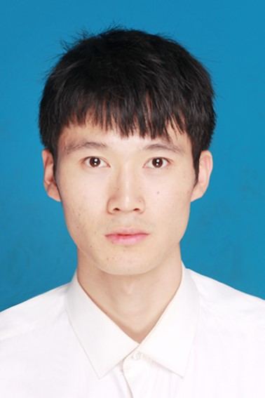

吕书畅(Shuchang Lyu)
|  | 博士后,中共党员 |
研究方向
人工智能、计算机视觉、深度学习: 紧凑型神经网络结构研究, 遥感地物智能识别, 医学图像智能处理, 大数据与知识图谱, 迁移学习与域自适应，嵌入式图像智能算法开发。
教育/工作经历
|
|
博士后（卓越百人） 北京航空航天大学 (2024.7 ~ 至今) |
|
|
博士 北京航空航天大学 (2020.9 ~ 2024.6) |
|
|
商汤科技 (2019.1 ~ 2020.4) |
|
|
硕士 北京航空航天大学 (2016.9 ~ 2019.1) |
|
|
本科 上海大学 (2012.9 ~ 2016.7) |
学术论文
MGML: Multigranularity Multilevel Feature Ensemble Network for Remote Sensing Scene Classification
Qi Zhao，Shuchang Lyu, Yuewen Li, et al.
IEEE Transactions on Neural Networks and Learning Systems (TNNLS), 2021. [中科院一区 IF:10.2]
Learn by Oneself: Exploiting Weight-Sharing Potential in Knowledge Distillation Guided Ensemble Network
Qi Zhao，Shuchang Lyu， Lijiang Chen，et al.
IEEE Transactions on Circuits and Systems for Video Technology (TCSVT), 2023 [中科院一区 IF:8.3]
Self-Training Guided Disentangled Adaptation for Cross-Domain Remote Sensing Image Semantic Segmentation
Qi Zhao，Shuchang Lyu， Hongbo Zhao，et al.
International Journal of Applied Earth Observation and Geoinformation (JAG), 2023 [中科院一区 IF:7.6]
Make Baseline Model Stronger: Embedded Knowledge Distillation in Weight-Sharing Based Ensemble Network
Shuchang Lyu, Qi Zhao, Yujing Ma, et al.
British Machine Vision Conference (BMVC), 2021. [CCF C]
Embedded Knowledge Distillation in Depth-level Dynamic Neural Network
Qi Zhao, Shuchang Lyu, Zhiwei Zhang, et al.
IEEE Conference on Computer Vision and Pattern Recognition Workshops CVPR Workshops. [CCF A oral]
TPH-YOLOv5: Improved YOLOv5 Based on Transformer Prediction Head for Object Detection on Drone-captured Scenarios
Xingkui Zhu*, Shuchang Lyu*b>, Xu Wang, et al.
International Conference on Computer Vision Workshops ICCV Workshops, 2021. [CCF A oral]
A Multi-Modality Ovarian Tumor Ultrasound Image Dataset for Unsupervised Cross-Domain Semantic Segmentation
Qi Zhao, Shuchang Lyu, Wenpei Bai, et al.
Pattern Recognition (PR), 2024. submitted, [中科院一区, IF: 7.5]
Deep Similarity Fusion Networks for One-Shot Semantic Segmentation
Shuchang Lyu, Guangliang Cheng, Qimin Ding
Asian Conference on Pattern Recognition (ACPR), 2019. [CCF C]
竞赛
2021, ICCV Workshop：“Vision Meets Drones: A Challenge (VisDrone 2021)”, 多目标检测赛道; 吕书畅, 祝星馗, 王胥; 4/113
2020, 首届“SenseTime, AI瞰世界，2020人工智能遥感解译大赛”, 遥感地物分类赛道; 吕书畅, 王胥; 10/83
发明专利
针对单样本语义分割的对称级联模型和非随机评测方法
吕书畅, 程光亮, 石建萍
国家发明专利, 201911054823.1
针对单样本语义分割的相似性特征聚合模型
吕书畅, 程光亮, 石建萍
国家发明专利, 201911063316.4
嵌入知识蒸馏的深度动态网络构建方法
吕书畅, 程光亮, 石建萍
国家发明专利, 201911090143.5
在研项目
基于紧凑型视觉感知卷积神经网络的集成式元学习行为识别方法
负责人
国家自然科学基金，2020 ~ 2024
北京市医院管理中心“登峰”计划专项
负责人
北航、首都医科大北京世纪坛医院合作项目，2022~2024